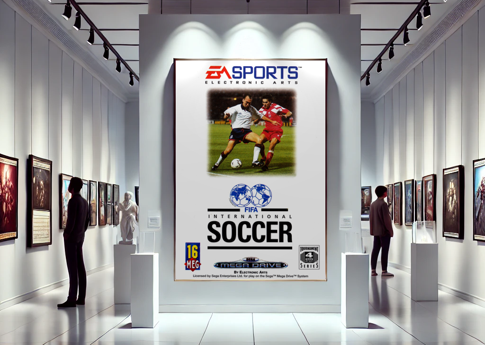

FIFA International Soccer
Tenía ganas de jugar un juego de fútbol y streamearlo, así que se me ocurrió probar la primera versión de FIFA.
Recordaba haberlo intentado hace algunos años, pero en ese momento no logró atraparme. Esta vez, con más ganas de redescubrirlo, decidí darle una nueva oportunidad. Definitivamente, fue una acierto.
Usando el emulador multiconsola RetroArch (por supuesto, porque tengo el original de respaldo) y mi querido controlador 8BitDo M30 (o joystick, como le decimos en Argentina), me puse manos a la obra para configurar los botones exactamente como en la consola y asegurarme una experiencia auténtica, como si estuviera jugando en el hardware original.
TRIVIA
Puntaje: 0/5
¿Cuál es el mejor jugador de FIFA International Soccer?
Jugabilidad y Características del Juego
A medida que avanzo en el juego, para mi sorpresa, me encuentro con una experiencia mucho más entretenida de lo que esperaba. Imaginaba un juego tosco y poco disfrutable, pero terminó siendo todo lo contrario. Además, me sorprendieron las múltiples configuraciones tácticas muy adelantadas para su época, como la posibilidad de ajustar la estrategia de juego, la presión en cada línea (defensa, mediocampo y delantera), el clima que afecta el comportamiento del balón y la simulación del cansancio en los jugadores. Y créanme, el aspecto táctico es clave si se quiere ganar con selecciones de menor nivel, donde jugar sin estrategia haría casi imposible la victoria.
El juego también ofrece varios modos de competición: un torneo que simula la Copa del Mundo desde la fase de grupos, otro modo que permite jugar directamente desde los octavos de final, una liga, y por supuesto, el clásico partido amistoso donde podemos seleccionar dos selecciones y jugar un partido rápido. Es importante destacar que el juego permite ajustar la duración de los partidos, lo que puede hacer que los encuentros sean más cortos o más largos según la preferencia del jugador. También se destaca la importancia de la jerarquía de los equipos, lo que significa que, partido a partido, los mejores equipos serán los que más victorias acumulen. Sin embargo, siempre habrá espacio para las sorpresas.
Según la pantalla de selección de equipo, Alemania es el mejor. Sin embargo Italia tiene la media de calificación de habilidad más alta con 82,72, superando a EA All-Stars (82,52), Países Bajos (80,80) y Alemania (80.07).
En cuanto a los equipos, el juego cuenta con 48 selecciones nacionales, además de un equipo especial llamado "EA Sports", cuyos jugadores tienen estadísticas máximas en todos los atributos. Cada selección tiene valores basados en su rendimiento real en aquella época, con Alemania como el equipo más dominante: todas sus estadísticas están al máximo, excepto "Running", que está solo un punto por debajo. Enfrentarlos con un equipo más débil supone un verdadero desafío.
Si buscas un verdadero desafío, intenta ganar el Mundial con Qatar sin guardar ni cargar la partida. No apto si te frustras fácilmente, sobre todo por las fallas que mostrará nuestro arquero.
Aspectos técnicos
La versión de Sega Mega Drive de FIFA International Soccer 93 se destacó por su innovadora perspectiva isométrica, un gran avance para los juegos de fútbol de la época. En lugar de utilizar una clásica vista lateral o superior, EA Sports implementó una simulación tridimensional que mejoraba la percepción de la cancha y ofrecía un mayor control de los jugadores.
El hardware de esta consola, con su capacidad para mostrar hasta 64 colores simultáneos a partir de una paleta de 512 colores, permitió representar el césped con degradados de verdes, aportando una mayor sensación de profundidad. Para compensar las limitaciones gráficas de la consola, se empleó la técnica de dithering, que alternaba patrones de píxeles para simular más colores y texturas más detalladas.
Uno de los grandes desafíos fue la implementación de una IA semiprogramada para equipos rivales, lo que permitía un juego más estructurado en comparación con otros títulos de fútbol de la época. Los jugadores rivales no simplemente perseguían el balón, sino que se posicionaban para cubrir espacios y generar oportunidades, un sistema primitivo que más tarde evolucionaría en juegos posteriores.
Mega Drive usaba un procesador de sonido Yamaha YM2612, lo que significaba que los efectos de sonido estaban limitados en comparación con la versión de Super Nintendo. Para los cánticos de la multitud y el pitido del árbitro, se utilizaban muestras PCM comprimidas a 8 bits, lo que generaba un audio algo distorsionado pero aceptable dentro de las limitaciones del sistema.
El juego también tenía una banda sonora básica con efectos dinámicos, pero debido a lamemoria limitada, no incluía comentarios en vivo ni música durante el partido, algo que se implementaría en juegos posteriores de la franquicia.
Veredicto
FIFA International Soccer 93 es un juego que marcó un antes y un después en la historia de los videojuegos de fútbol. A pesar de sus limitaciones técnicas, logró ofrecer una experiencia de juego profunda y entretenida, con una jugabilidad que se mantiene sólida incluso hoy en día.
Si bien es cierto que los gráficos y el sonido han envejecido mal, la diversión y la emoción de ganar un partido en los últimos minutos siguen intactas. Es un juego que merece ser recordado y apreciado por su contribución al género, y por la diversión que sigue ofreciendo a los jugadores que buscan una experiencia retro auténtica.
Realmente disfruté mucho este juego. Además de ser el punto de partida de toda una saga legendaria, lo cual ya es un mérito en sí mismo, FIFA International Soccer '93 fue innovador en muchos aspectos, lo que le suma aún más valor.
En resumen, me pareció un título divertido, ideal para desafíos al jugar con equipos de menor nivel, perfecto para sesiones cortas de juego, y con mecánicas y características muy bien aprovechadas para la época. Por todo esto, considero que FIFA International Soccer '93 es, sin dudas, un juegazo.
¿Mis tres palabras para definir este juego? Desafiante, entretenido, innovador.
Galería de imágenes
Curiosidades
1. Sin nombres reales:
A diferencia de las versiones modernas, los jugadores no tenían nombres oficiales debido a la falta de licencias. Inclusive se usaron nombres en referencia a desarrolladores que participaron de la producción del juego.
2. Bugs divertidos:
Si el jugador hacía una falta y debía recibir tarjeta, era posible escapar y que el árbitro te persiguiera.
3. Goles con mayor probabilidad:
Viniendo desde la esquina del área, es más posible marcar un gol que si se está mano a mano con el arquero. Esto obviamente también dependía de las puntuaciones del arquero.
4. Código de amistad:
Con un poco de práctica, en cada saque de arquero con pelota en mano, es posible pararse frente a este, interceptar la pelota y marcar un gol instantáneo. Si juegas con alguien, mejor aclarar que ese tipo de goles no es válido.
5. Cheats:
Existen códigos y combinaciones de botones que cambian el comportamiento del juego, y hasta pueden darte goles a favor. Estos trucos pueden ingresarse al inicio del juego o en la sección Password.